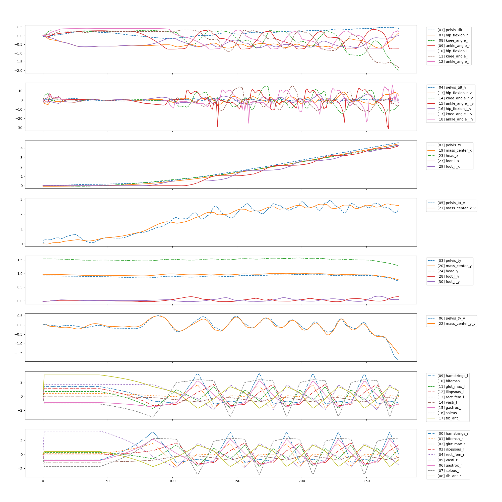
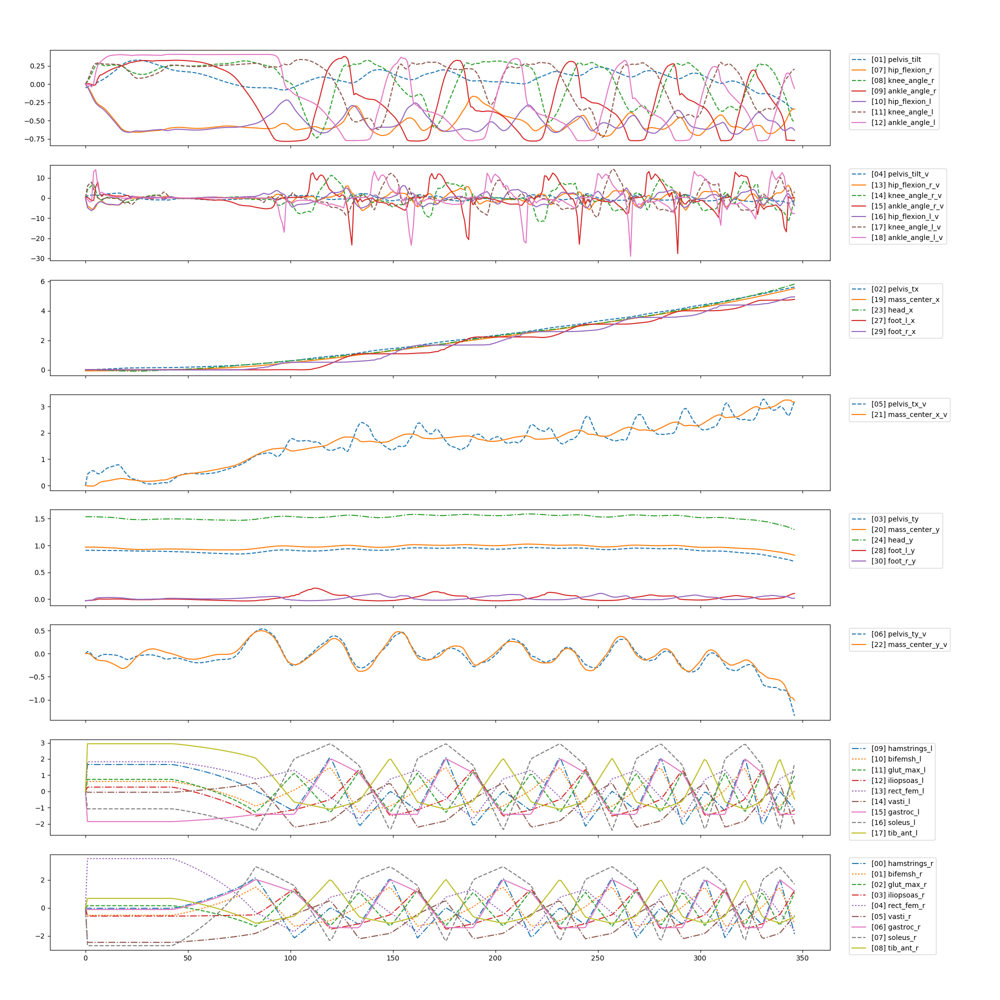

-

NIPS 2018 : Adversarial Vision Challenge (Robust Model Track)
Pitting machine vision models against adversarial attacks.
Challenge ended
1995
Submissions395
Participants56.6 k
Views -

League of Nations Archives Digitization Challenge
Help us share the archives of the League of Nations, a vital part of world history
Challenge ended
469
Submissions135
Participants7091
Views -
 209
209
Submissions444
Participants28.9 k
Views -

IEEE Investment Ranking Challenge
Explore methodology to identify assets with extreme positive or negative returns.
Challenge ended
541
Submissions207
Participants12.4 k
Views -

NIPS 2017: Learning to Run
Reinforcement learning environments with musculoskeletal models
Challenge ended
2154
Submissions631
Participants91.1 k
Views -

Learning How to Walk
Reinforcement learning environments with musculoskeletal models
Challenge ended
200
Submissions125
Participants18 k
Views
ViktorF hasn't authored any tutorials yet...
League of Nations Archives Digitization Challenge | PNG? | about 1 year ago
It is not a problem to read the JPEG files, certainly.
What I wanted to point out is that JPEG is a lossy format blurring the edges of letter in the scanned text pages, while PNG would be a lossless format keeping them sharp. Certainly at the cost of bigger file size.
League of Nations Archives Digitization Challenge | Noisy training datasets | about 1 year ago
I guess the test set has the same error rate, providing you did a random split.
In that case we won’t be able to get near to perfect scores on the leaderboard.
Please feel free to contact me if you need help fixing the datasets. I offer the full predictions, so you can find the glaring mistakes and manually verify, then relabel them. It would be nice to do it quickly before we go far into the competition.
Please let me know if the competition is abandoned. It is pretty silent here…
League of Nations Archives Digitization Challenge | Noisy training datasets | about 1 year ago
Found 400+ examples of French mislabeled as English.
Found 100+ examples of English mislabeled as French.
Some of them are mixed language pages, so 50%-50% prediction would be reasonable. But not that many falls into this category.
Please find the lists here: https://1drv.ms/f/s!AqEgz8G_d8TShq0bhMTOwrnNHu1PHA
So the training set is indeed very noisy.
There can be a few mistakes, still.
League of Nations Archives Digitization Challenge | Unable to download data | about 1 year ago
It is accessible in a quite convoluted way:
Click on Datasets up in the menu, then on Datasets below.
It will download a PDF which has the link to a page which has the downloadable data in tar.gz format.
At the time of writing the link is: https://owncloud.unog.ch/index.php/s/AHiEdCWr5Y86FsO
Train one is 10GB, test one is 2GB.
League of Nations Archives Digitization Challenge | Binary label does not fit the data | about 1 year ago
Check training sample: train/en/0a0b9dcefa8339b0a1bc7e7e79bcecc3.jpg
This is equally English and French, so 0.5, 0.5 would be a perfect prediction.
But it was categorized as English in the training set.
How to resolve these samples?
Does English have precedence over non-English?
League of Nations Archives Digitization Challenge | Noisy training datasets | about 1 year ago
What should be the right prediction in case the document is not English nor French?
Should we predict English / Non-English instead?
Or should we predict 0.000,0.000 ?
There are also empty pages and pages with a single country name as a title on it, which is likely the same in English and French…
Learning How to Walk | Thank you everyone :) #Results | over 2 years ago
Thank you very much for organizing this competition and providing CrowdAI as an alternative platform in general.
All of my models were based on the CMA-ES optimization algorithm, since it can explore the problem space pretty efficiently by running a minimum number of experiments.
These days I am quite busy optimizing my future due to a recent layoff affecting me. As a consequence I need a bit more time to clean up the code and properly document all the learnings and results. I will post a GitHub link here as soon as possible.
Tech stack: * Single Linode with 4 cores to run four models in parallel 24/7 * Ubuntu 16.04 64 bit LTS * Anaconda2, latest Python 2.7 (could not use 3.x due to the simulation package), Intel MKL * CMA-ES package: cma
Learning How to Walk | What is exactly considered "walking" | over 2 years ago
As far as I see there is no explicit clipping of action values in the Python code.
I tried to train such a model out of curiosity, but it does not jump high. So the OSIM library seems to limit the force somewhere in the simulation code.
Learning How to Walk | What is exactly considered "walking" | over 2 years ago
Cheat: Jump high at 45 degrees ;)
Detailed idea: * Duck down in a few iterations. * Jump forward at 45 degrees with very high force. (It does not seem to be limited by the current grader.) * It would cause the skeleton to fly on ballistic curve, like a cannon ball. * Win: It would be 10k+ score in 500 iterations.
Not walking, granted.
Can it be trained? Sure.
Why haven’t our networks figured it out already?
Learning How to Walk | What is exactly considered "walking" | over 2 years ago
According to the competition rules the goal is to maximize pelvis_tx at end of 500th iteration while keeping pelvis_ty above 0.7 all the time.
It does not state what is considered walking, so jumping like a kangaroo is also considered as a valid solution. It is a lower degree of freedom model which is much easier to train. Since the human model does not seem to have hands it might actually be faster to jump forward than to walk…
What is considered as “walking” exactly?
Also: The human body model contains activation minimum 0.0 and maximum 1.0, but the grader accepts and happily executes activation values above 1.0.
Learning How to Walk | Observation and activation time-series | over 2 years ago
Time-series plot of observation and activation values from a 4m walk, then the skeleton fell out of balance at 4.46m:
Horizontal axis is the number of iterations.

5m walk, then falling out of balance at 5.5m (mass center is well ahead of both feet):

The controller returns activation values above 1.0 in my case. Clipping the activation values at 1.0 causes the skeleton to fall almost instantly, so no clipping is done by osim despite the min and max values for all muscle activations are defined as 0.0 and 1.0 in the XML body model.
Learning How to Walk | Activation vector (muscles) | over 2 years ago
for i, m in enumerate(env.osim_model.muscleSet):
print i, m.getName()
0 hamstrings_r
1 bifemsh_r
2 glut_max_r
3 iliopsoas_r
4 rect_fem_r
5 vasti_r
6 gastroc_r
7 soleus_r
8 tib_ant_r
9 hamstrings_l
10 bifemsh_l
11 glut_max_l
12 iliopsoas_l
13 rect_fem_l
14 vasti_l
15 gastroc_l
16 soleus_l
17 tib_ant_l
Learning How to Walk | Observation vector | over 2 years ago
Python feature definitions from my training code:
import math, collections
import numpy as np
# Coordinate axes from the view of the walking skeleton
# x: forward getCoordinate(0)
# y: up getCoordinate(1)
# z: right getCoordinate(2)
# Observations
Feature = collections.namedtuple('Feature', ('name', 'min', 'max', 'default', 'use'))
OBSERVED_FEATURES = (
Feature('zero', min=0.0, max=1.0, default=0.0, use=0), # Always zero
Feature('pelvis_tilt', min=-math.pi/2, max=math.pi/2, default=-0.05, use=1),
Feature('pelvis_tx', min=-1.0, max=1e6, default=0.0, use=1),
Feature('pelvis_ty', min=-1.0, max=2.0, default=0.91, use=1), # Simulation stops below 0.7
Feature('pelvis_tilt_v', min=-10.0*math.pi, max=10.0*math.pi, default=0.0, use=1),
Feature('pelvis_tx_v', min=-20.0, max=20.0, default=0.0, use=1),
Feature('pelvis_ty_v', min=-10.0, max=10.0, default=0.0, use=1),
Feature('hip_flexion_r', min=-2*math.pi/3, max=2*math.pi/3, default=0.0, use=1),
Feature('knee_angle_r', min=-2*math.pi/3, max=2*math.pi/3, default=0.0, use=1),
Feature('ankle_angle_r', min=-math.pi/2, max=math.pi/2, default=0.0, use=1),
Feature('hip_flexion_l', min=-2*math.pi/3, max=2*math.pi/3, default=0.0, use=1),
Feature('knee_angle_l', min=-2*math.pi/3, max=2*math.pi/3, default=0.0, use=1),
Feature('ankle_angle_l', min=-math.pi/2, max=math.pi/2, default=0.0, use=1),
Feature('hip_flexion_r_v', min=-10*math.pi, max=10*math.pi, default=0.0, use=1),
Feature('knee_angle_r_v', min=-10*math.pi, max=10*math.pi, default=0.0, use=1),
Feature('ankle_angle_r_v', min=-10*math.pi, max=10*math.pi, default=0.0, use=1),
Feature('hip_flexion_l_v', min=-10*math.pi, max=10*math.pi, default=0.0, use=1),
Feature('knee_angle_l_v', min=-10*math.pi, max=10*math.pi, default=0.0, use=1),
Feature('ankle_angle_l_v', min=-10*math.pi, max=10*math.pi, default=0.0, use=1),
Feature('mass_center_x', min=-1.0, max=1e6, default=0.0, use=1),
Feature('mass_center_y', min=-1.0, max=2.0, default=0.97, use=1),
Feature('mass_center_x_v', min=-20.0, max=20.0, default=0.0, use=1),
Feature('mass_center_y_v', min=-10.0, max=10.0, default=0.0, use=1),
Feature('head_x', min=-1.0, max=1e6, default=0.0, use=1),
Feature('head_y', min=0.0, max=3.0, default=1.54, use=1),
Feature('pelvis_x', min=-1.0, max=1e6, default=0.0, use=0), # Redundant, equals to pelvis_tx
Feature('pelvis_y', min=-1.0, max=1.0, default=0.91, use=0), # Redundant, equals to pelvis_ty
Feature('foot_l_x', min=-1.0, max=1e6, default=0.0, use=1),
Feature('foot_l_y', min=-1.0, max=2.0, default=0.0, use=1),
Feature('foot_r_x', min=-1.0, max=1e6, default=0.0, use=1),
Feature('foot_r_y', min=-1.0, max=2.0, default=0.0, use=1),
)
FEATURE_NAMES = [feature.name for feature in OBSERVED_FEATURES]
FEATURE_NAME2IDX = dict((name, idx) for idx, name in enumerate(FEATURE_NAMES))
FEATURE_MIN_VALUES = np.array([feature.min for feature in OBSERVED_FEATURES])
FEATURE_MAX_VALUES = np.array([feature.max for feature in OBSERVED_FEATURES])
FEATURE_MAGNITUDES = FEATURE_MAX_VALUES - FEATURE_MIN_VALUES
FEATURE_DEFAULTS = np.array([feature.default for feature in OBSERVED_FEATURES])
Please leave a comment if you find bugs or misunderstandings above. I would be happy to fix it in my code.
Learning How to Walk | Standing still with Keras-RL | over 2 years ago
I think just standing still would be a good starting point.
The resulting model should be able to balance the body indefinitely, even in the presence of small disturbances, like added noise to the observation vector.
This is what I’m working on right now. Not quite there yet, but I have some promising results already…
League of Nations Archives Digitization Challenge | Is this competition abandoned? | 12 months ago
4 days left. Many unanswered questions. Please talk to us. Thank you.